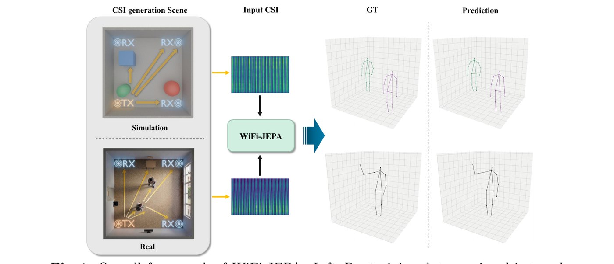
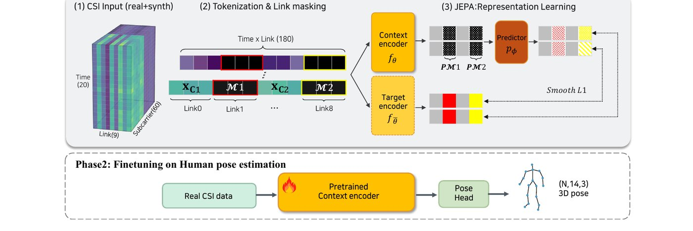

WiFi-JEPA: Self-supervised Learning for WiFi-CSI 3D Human Pose Estimation

▲ Simulated and real CSI capture scenes feed the same model; ground truth and prediction on the right.
Overview
WiFi Channel State Information (CSI) enables privacy-preserving human pose sensing through walls and in darkness, but existing WiFi-based pose estimators often fail under domain shifts. WiFi-JEPA is a self-supervised framework that learns CSI-native representations by predicting masked latent embeddings.
Approach
- Axis-preserving tokenization — keeps the (subcarrier × time × link) structure of CSI (60 × 20 × 9) instead of flattening into spectrograms.
- Link masking — masks whole antenna-link columns, forcing the encoder to learn the cross-link structure that encodes 3D geometry.
- Ray-traced synthetic CSI — NVIDIA Sionna RT generates benchmark-compatible CSI from geometric primitives (spheres, cubes, cylinders): ~90K frames in ~10 GPU-hours, with no human meshes or motion capture.
- CSI-native JEPA — predicts the masked links' latent embeddings with an EMA target encoder, then fine-tunes with a PETR-style decoder.

▲ Phase 1 (top): self-supervised pre-training with link masking over the (T, L) token grid. Phase 2 (bottom): supervised fine-tuning with a pose head.
Results
- State of the art: 76.8 mm single-person / 93.5 mm multi-person MPJPE (+14.7% over the previous best, DT-Pose).
- Cross-environment error reduced by 48%; hand-joint error reduced by 64%.
- Pretraining on synthetic primitives reaches within ~3 mm of real-data pretraining; real + simulated is best.
Links
Project page · Paper · Code (soon)
BibTeX
@inproceedings{kim2026wifijepa,
title = {WiFi-JEPA: Self-supervised Learning for WiFi-CSI 3D Human Pose Estimation},
author = {Kim, Doeon and Lee, Jungyoon and Kim, Seongsin and Kim, Seong-heum},
booktitle = {Proceedings of the European Conference on Computer Vision (ECCV)},
year = {2026}
}